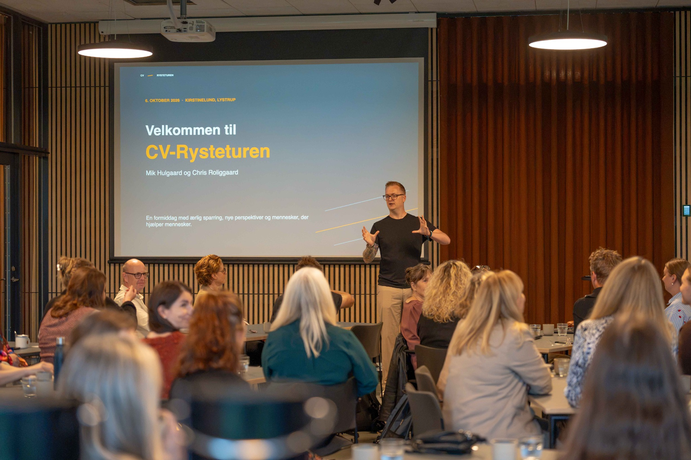

Nye idéer er gode. Det er endnu bedre, når der sker noget med dem.
Gode idéer er der nok af. Kunsten er at få øje på mulighederne, udfordre de vante perspektiver og finde ud af, hvad der er værd at føre ud i livet. Jeg bidrager med ærlighed, energi og nye vinkler – og hjælper med at gøre tanker konkrete med respekt for de mennesker, jeg samarbejder med.

Jeg tænker med. Jeg tænker imod. Og jeg tænker videre.
Jeg kan godt lide at vende idéer med andre. At stille spørgsmål, udfordre det oplagte og undersøge, om der er en bedre vej frem.
Jeg er hudløst ærlig, men ikke for enhver pris. Jeg siger, hvad jeg ser, også når det går imod den gængse opfattelse. Det gør jeg med respekt for den enkelte og med et ønske om, at mine perspektiver kan bruges til noget.
Jeg er god til at se forbindelser, stille de spørgsmål, der åbner nye muligheder, og hjælpe med at kvalificere en idé, så den bliver lettere at handle på.
Jeg har en get shit done-tilgang. Ikke fordi alting skal gå stærkt, men fordi gode idéer fortjener en chance for at blive til mere end snak.
Jeg trives, når idéer får liv
Jeg er nysgerrig, får ofte mange idéer og elsker at samle mennesker om noget, der endnu kun er en tanke. Jeg leder efter forbindelser, spørger ind og siger højt, når jeg tror, vi overser noget.
Jeg kan godt lide, når vi bliver klogere sammen, får øje på nye muligheder og finder ud af, hvad næste skridt skal være. Det må gerne være direkte og udfordrende, så længe det er ordentligt – og fører os videre.
Jeg tager ikke automatisk alle opgaver på mig. Hvis jeg ikke er den rette til at hjælpe, siger jeg det åbent. Og hvis jeg kan, peger jeg gerne videre til nogen i mit netværk, der passer bedre til opgaven.
Lad os tage en afklarende samtale